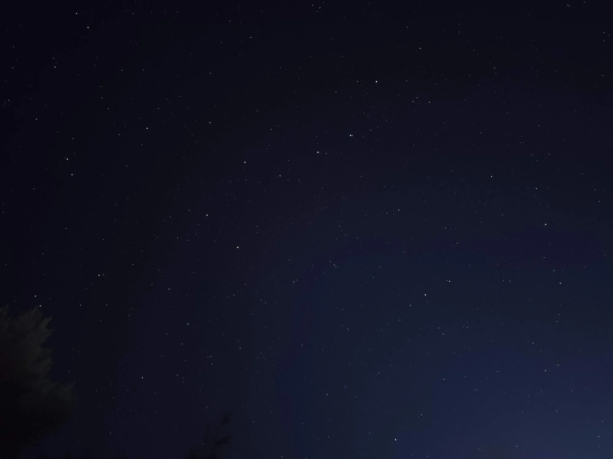
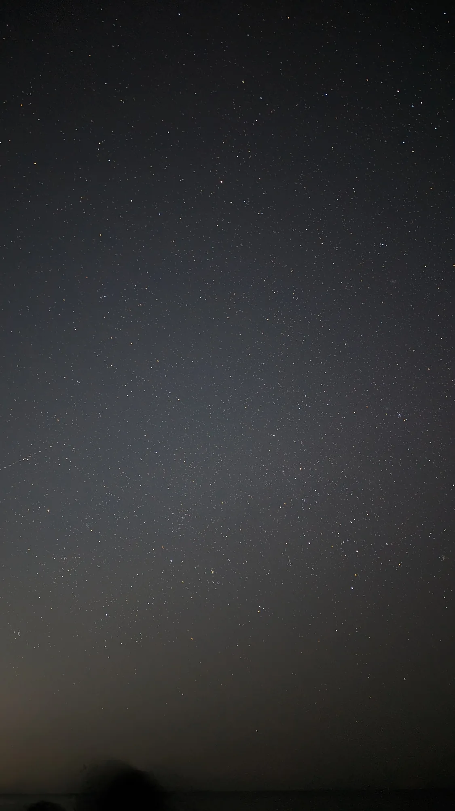
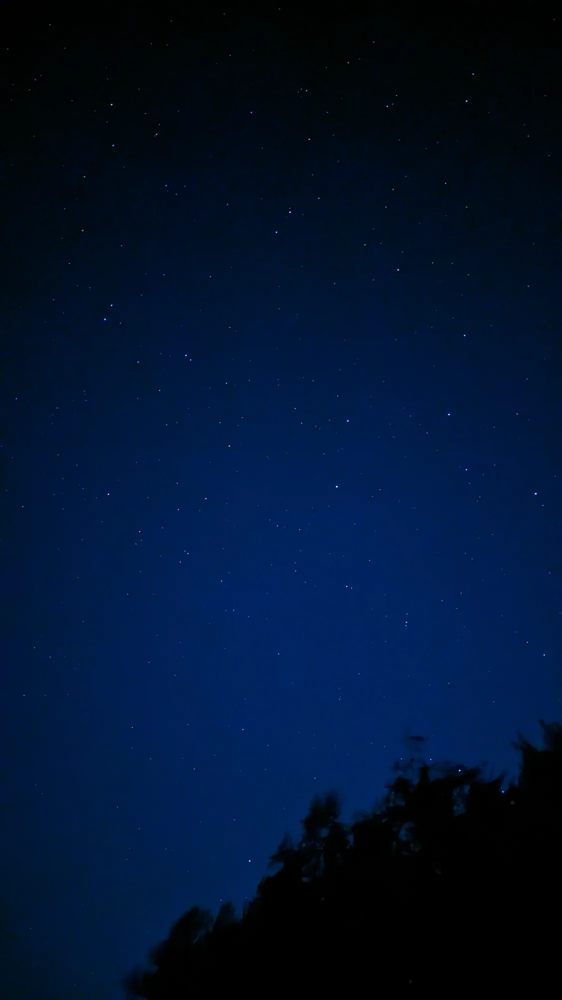
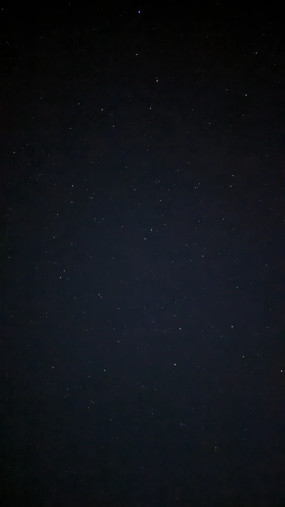

01
The Moon
Craters along the terminator look carved out of light. I could stare for hours — and I usually do.
Room i · The observatory
The universe is a question that never ends. I hope it never does.
Shutter closed Press and hold — the sky turns around Polaris, just like a long-exposure photograph.
“For small creatures such as we, the vastness is bearable only through love.”
— Carl Sagan, Contact
Every answer opens a bigger question. We learned the stars are suns — then that there are more of them than grains of sand on every beach on Earth. We photographed a black hole — and now we want to know what happens inside it. That's the part I love: the universe never runs out of questions.
Move your cursor — or finger — to look through the eyepiece
Craters along the terminator look carved out of light. I could stare for hours — and I usually do.
Four tiny moons in a line, exactly as Galileo saw them in 1610 — and they move from night to night.
The first time you see the rings with your own eyes, you gasp. Everybody does.
The brightest “star” at dusk — and through a telescope it shows phases, like a tiny moon.
A rusty dot that rewrote science fiction. On a steady night, a polar cap winks back.
Hover or tap a cluster of stars to connect them. Some of these have been guiding travellers — and storytellers — for thousands of years.




Voyager 1 is living it for all of us. Launched in 1977 with a golden record of Earth's sounds and music on board, it's the farthest thing humanity has ever built — and right now it is roughly
25,900,000,000km from Earth
Its radio signal takes about 24 hours to reach us. Around November 2026, Voyager becomes the first spacecraft ever to sit one full light-day away.
Live estimate, ~17 km every second.
“Remember to look up at the stars and not down at your feet.”
— Stephen Hawking